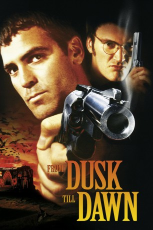
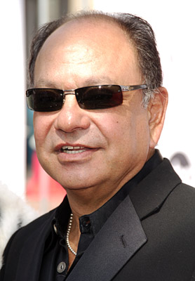
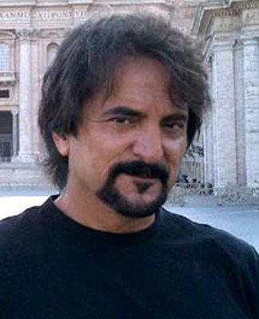
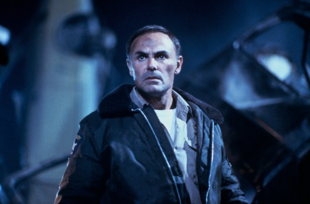
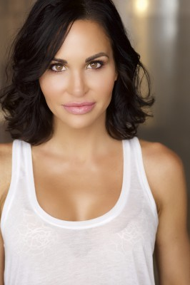

#294 From Dusk Till Dawn
 
 IMDB-Wertung: 7.3 / 10
IMDB-Wertung: 7.3 / 10  Metascore: 48
Metascore: 48 
Richard Gecko ist ein Psychopath, sein Bruder Seth ein eiskalter Verbrecher. Richard befreit Seth aus dem Gefängnis, sie rauben eine Bank aus und hinterlassen eine Spur aus Blut und Verwüstung. Auf ihrer Flucht entführen sie schließlich einen ehemaligen Baptisten-Prediger, der sein Amt nach dem Tod seiner Frau aufgegeben hat und nun mit seinen beiden Kindern von Ort zu Ort zieht. Richard verspricht ihm, ihn und seine Kinder freizulassen, wenn dieser sie nach Mexiko schmuggelt. Und eigentlich möchte Richard dieses Versprechen sogar einhalten, gäbe es da nicht das Titty Twister, eine Bar auf der anderen Seite der Grenze, in der sich Richard eigentlich nur mit mexikanischen Gangstern treffen will, um mit ihnen ein Geschäft zu machen. Leider wird das Titty Twister von einer Horde blutrünstiger Vampire geleitet, die ihre Gäste, inklusive Gangster und Prediger, einschließen, um sich an ihnen zu laben
Jahr: 1996
Dauer: 108 Minuten
FSK: 18
Land: USA Studio: Dimension FilmsTonspuren: DTS - ,
Untertitel: Deutsch, Englisch,
Auflösung: 1080p (1920×1038) Größe: 15872 MB
Genre: Action, Krimi, Horror
Regisseur:  Robert Rodriguez
Robert Rodriguez
Drehbuch: Robert Kurtzman, Quentin Tarantino
Soundtrack: Graeme Revell
Darsteller:
 George Clooney als Seth Gecko
George Clooney als Seth Gecko Quentin Tarantino als Richard Gecko
Quentin Tarantino als Richard Gecko Harvey Keitel als Jacob Fuller
Harvey Keitel als Jacob Fuller Juliette Lewis als Kate Fuller
Juliette Lewis als Kate Fuller Salma Hayek als Santanico Pandemonium
Salma Hayek als Santanico Pandemonium-  Cheech Marin als Border Guard / Chet Pussy / Carlos
 Danny Trejo als Razor Charlie
Danny Trejo als Razor Charlie-  Tom Savini als Sex Machine
- Fred Williamson als Frost
- Michael Parks als Texas Ranger Earl McGraw
-  John Saxon als FBI Agent Stanley Chase
 Marc Lawrence als Old Timer Motel Owner
Marc Lawrence als Old Timer Motel Owner Kelly Preston als Newscaster Kelly Houge
Kelly Preston als Newscaster Kelly Houge John Hawkes als Pete Bottoms, Liquor Store Clerk
John Hawkes als Pete Bottoms, Liquor Store Clerk- Aimee Graham als Blonde Hostage
 Greg Nicotero als Sex Machine's Buddy
Greg Nicotero als Sex Machine's Buddy- Cristos als Danny
 Mike Moroff als Manny
Mike Moroff als Manny- Ungela Brockman als Bar Dancer
-  Tia Texada als Bar Dancer
- Michael McKay als Monster
 Jake McKinnon als Monster
Jake McKinnon als Monster- Walter Phelan als Monster
 Lawrence Bender als Man in Diner , uncredited
Lawrence Bender als Man in Diner , uncredited- Carlo Corazon als Vampire , uncredited
- Annette Harper als Bar Dancer , uncredited
- Robert Rodriguez als Band Member , uncredited
- Ernest Liu als Scott Fuller
- Brenda Hillhouse als Hostage Gloria Hill
 Tito Larriva als Titty Twister Guitarist & Vocalist
Tito Larriva als Titty Twister Guitarist & Vocalist- Peter Atanasoff als Titty Twister Saxophonist
- Johnny 'Vatos' Hernandez als Titty Twister Drummer
- Heidi McNeal als Red-headed Hostage
- Ernest M. Garcia als Big Emilio
- Michelle Berube als Bar Dancer
- Neena Bidasha als Bar Dancer
- Veena Bidasha als Bar Dancer
- Madison Clark als Bar Dancer
- María Díaz als Bar Dancer
- Rosalia Hayakawa als Bar Dancer
- Janine Jordae als Bar Dancer
- Jacque Lawson als Bar Dancer
- Houston Leigh als Bar Dancer
- Janie Liszewski als Bar Dancer
- John Paul Fedele als Monster
- Josh Patton als Monster
- Wayne Toth als Monster
- Henrik von Ryzin als Monster
- Amy Minda Cohen als Herself
- Cecilia Montiel als Herself
Datei: X:\FSK18-Collections\From Dusk Till Dawn\From Dusk Till Dawn (1996, FSK18, 1920x1038).mkv seit 16.02.2015
Festplatte: FSK18
 Alle Filme aus Gruppe 'FSK18-Collections\From Dusk Till Dawn'
Alle Filme aus Gruppe 'FSK18-Collections\From Dusk Till Dawn'